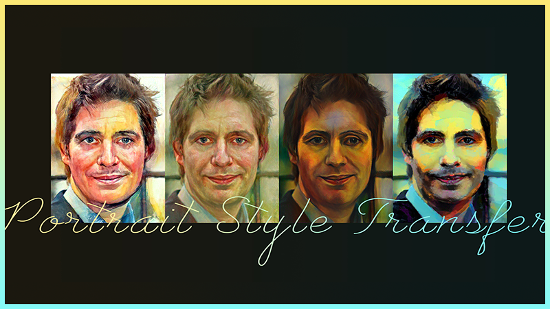

|
Hi! Here is ZHANG Yuechen, Julian. I am a fourth-year Ph.D. student at CUHK, advised by Prof. Jiaya Jia. I also join SmartMore as a computer vision developer. Before that, I received my B.Sc. degree at CUHK. My primary research interest is in controllable AIGC & VLM. Additionally, I have worked on several projects involving image segmentation. I will graduate in Dec 2025 and is open for job opportunities (给孩子一个好工作吧). Drop me an Email if you are recruiting! |
|
|
Hover the picture to see more |

|
Yuechen Zhang, Jinbo Xing, Bin Xia, Shaoteng Liu, Bohao Peng, Xin Tao, Pengfei Wan, Eric Lo, Jiaya Jia Preprint, 2025 arXiv / Project Page / Code Jenga accelerates HunyuanVideo by 8.83× through dynamic attention carving and progressive resolution generation, enabling seconds-level high-quality video generation without model retraining. |


|
Yuechen Zhang*, Yaoyang Liu*, Bin Xia, Bohao Peng, Zexin Yan, Eric Lo, Jiaya Jia Preprint, 2025 arXiv / Project Page / Code 
Light passes through the Magic Mirror to create a personalized virtual world~ It generates identity-preserved videos from reference images using a conditional adaptive normalization module for faster convergence in video Diffusion Transformers. |


|
Bohao Peng, Jian Wang, Yuechen Zhang, Wenbo Li, Ming-Chang Yang, Jiaya Jia Preprint, 2024 arXiv / Project Page / Demo / Code 
This work proposes a light-weight controllable module for various base models (SD1.5, SDXL, SD3, SVD) and tasks (image / video generation with various conditions). |


|
Yanwei Li*, Yuechen Zhang*, Chengyao Wang*, Zhisheng Zhong, Yixin Chen, Ruihang Chu, Shaoteng Liu, Jiaya Jia Preprint, 2024 arXiv / Project Page / Demo / Model / Data / Code 
Mining potential of open-source VLMs! Mini-Gemini is a novel framework ranges from 2B to 34B VLMs for hi-resolution image understanding. It has a impressive OCR capability, and can generate HQ images powered by its multi-modal reasoning ability. |


|
Yuechen Zhang, Shengju Qian, Bohao Peng, Shu Liu, Jiaya Jia CVPR, 2024 arXiv / Project Page / Code 
Control text generation by highlighting our prompt! Prompt Highlighter is a training-free inference pipeline, which facilitates token-level user interactions for customized generation. Our method is compatible for both LLMs and VLMs. |


|
Yuechen Zhang, Jinbo Xing, Eric Lo, Jiaya Jia NeurIPS (Spotlight), 2023 arXiv / Project Page / Code 
Given an image as the prompt, we can generate its variations by aligning the diffusion inversion chain. The variations are diverse and controllable. |

|
Shaoteng Liu, Yuechen Zhang, Wenbo Li, Zhe Lin, Jiaya Jia CVPR, 2024 arXiv / Project Page / Code 
Add 'Lego' attribute to the child, an edited video is generated. Powered by a novel video inversion process and cross-attention control. We also find that a Decoupled-Guidance strategy is essential for video editing. |

|
Yuechen Zhang, Zexin He, Jinbo Xing, Xufeng Yao, Jiaya Jia CVPR, 2023 arXiv / Project Page / Code 
We present a controllable scene stylization method utilizing radiance fields to stylize a 3D scene, with a single stylized 2D view taken as reference. |

|
Jinbo Xing, Menghan Xia, Yuechen Zhang, Xiaodong Cun, Jue Wang, Tien-Tsin Wong CVPR, 2023 arXiv / Project Page/ Code 
A speech input generates an authentic 3D facial animation based on representations with discrete motion prior. |


|
Yuechen Zhang, Tiancheng Shen*, Huaijia Lin, Lu Qi, Eric Lo, Jiaya Jia Preprint, 2022 R2Former decomposes the relationships into intra-region ones and inter-region ones. With such modifications, the performance of mask classification can be improved on widely used semantic segmentation benchmarks. |


|
Tiancheng Shen, Yuechen Zhang, Lu Qi, Jason Kuen, Xingyu Xie, Jianlong Wu, Zhe Lin, Jiaya Jia CVPR, 2022 Paper / Code 
We propose the Continuous Refinement Model (CRM) for the ultra high-resolution mask refinement. CRM aligns the feature with the refinement target and aggregates them to reconstruct image details. |


|
Xufeng Yao, Yang Bai, Xinyun Zhang, Yuechen Zhang, Qi Sun, Ran Chen, Ruiyu Li, Bei Yu CVPR, 2022 Paper / Code 
We propose a novel proxy-based contrastive learning method, which replaces the original sample-to-sample relations with proxy-to-sample relations, significantly alleviating the positive alignment issue. |
|
|

Flow-aware synthesis: A generic motion model for video frameinterpolation Paper Computational Visual Media, 2021. Jinbo Xing, Wenbo Hu, Yuechen Zhang, Tien-Tsin Wong |
ESTR4999: Few-Shot Glyph Style Transfer Code CUHK FYP. Supervised by Tien-Tsin Wong. |

ESTR4998: Protrait Style Transfer Code CUHK FYP. Collaborated with Jinbo Xing, supervised by Tien-Tsin Wong. |
|
|
| SmartMore Corporation Limited |
Computer Vision Developer
Mentor: Shu Liu |
Jan. 2020 - Present |
| The Chinese University of Hong Kong |
Bachelor of Computer Science
Supervisor: Tien-Tsin Wong |
Sep. 2016 - Jul. 2021 |
| Nanyang Technological University | GEM Trailblazer Exchange Program | Jan. 2019 - May. 2019 |
|
|
CUHK ELITE Stream Scholarship, 2017, 2018
CUHK CSE Academic Outstanding Award, 2018, 2019, 2020
CUHK Faculty of Engineering, Dean’s List, 2017, 2018
CWChu College Scholarships for Academic Excellence, 2018, 2019, 2020
|
|
| CSCI3280 | Introduction to Multimedia Systems | 2023 Spring |
| ESTR4998 | Final Year Thesis | 2024-2025 |
|
|
| 2024 | CVPR, NeurIPS, ECCV, AAAI |
| 2023 | AAAI |
|
Last updated: Nov 2022
|